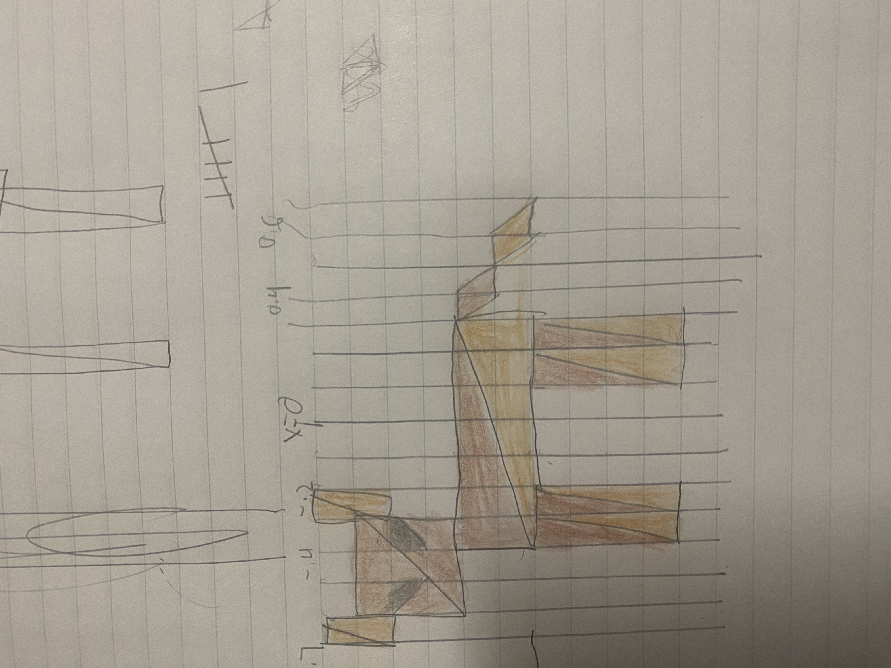

I added a star button
Please use a browser that supports "canvas"
Clear Canvas
Drawing Mode:
Squares
Triangles
Circles
Stars
Shape Color:
Red
Green
Blue
Shape Size:
(Circles) Segment Count:
My drawing
My Original Cow Drawing
